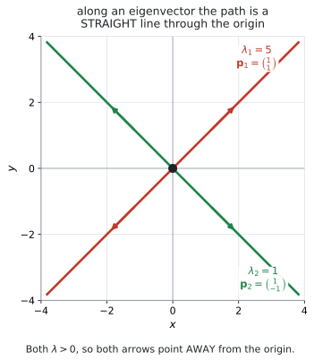
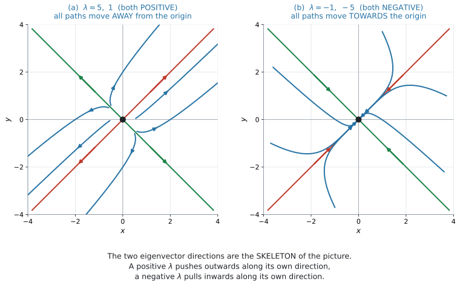
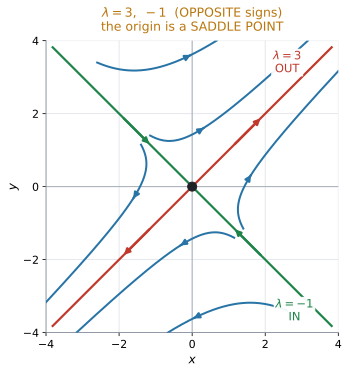

AHL 5.17a — Phase portraits: real eigenvalues（異なる実固有値の相図）
- 連立微分方程式を行列の形 \(\dfrac{d\mathbf{X}}{dt} = M\mathbf{X}\) に書ける。
- eigenvalue（固有値）と eigenvector（固有ベクトル）を求められる（AHL 1.15）。
- 公式集の厳密解を書き、初期条件から \(A\) と \(B\) を決められる。
- \(\lambda\) の符号から、原点から離れるか近づくかを言える。
- node（結節点）と saddle point（鞍点）を見分けられる。
- phase portrait（相図）に trajectory（軌道）をかき込める。
The idea
このページでは、次の連立微分方程式を例に使います。
\[ \frac{dx}{dt} = 3x + 2y, \qquad \frac{dy}{dt} = 2x + 3y \]
この \(2\) 本の式は、点 \((x,\ y)\) が、その場所から次にどちらへ動くかを表しています。動いた跡が trajectory（軌道）、軌道を何本もかいた絵が phase portrait（相図）です。
相図は、次の順で作ります。
固有ベクトルが相図の基本となる方向を示し、固有値がその方向で増えるか減るかを示します。 このページは、この \(1\) 行を \(8\) つの節に分けたものです。
1. 行列の形に書きます
この節ですること：\(2\) 本の式を、\(1\) 本の行列の式にまとめます。
AHL 5.16b では、連立系を Euler 法で数値的に追いました。このページで扱うのは、右辺が \(x\) と \(y\) の一次式だけという特別な場合です。この形なら、厳密な解の式が書けます。
\[ \frac{dx}{dt} = ax + by, \qquad \frac{dy}{dt} = cx + dy \]
\(xy\) の項がありません。 AHL 5.16b の predator–prey モデルには \(xy\) があったので、この方法は使えません。そちらは Euler 法で扱います。
まず、\(2\) つの成分を縦に並べたものに、名前を付けます。
\[ \mathbf{X}(t) = \begin{pmatrix} x(t) \\ y(t) \end{pmatrix} \]
\(\mathbf{X}(t)\) は、時刻 \(t\) に点がいる場所です。これを微分するときは、成分ごとに微分します。
\[ \frac{d\mathbf{X}}{dt} = \begin{pmatrix} \dfrac{dx}{dt} \\[2mm] \dfrac{dy}{dt} \end{pmatrix} \]
ここに、例の \(2\) 本の式
\[ \frac{dx}{dt} = 3x + 2y, \qquad \frac{dy}{dt} = 2x + 3y \]
を入れます。右辺は、行列とベクトルの積で書けます。
\[ \frac{d\mathbf{X}}{dt} = \begin{pmatrix} 3 & 2 \\ 2 & 3 \end{pmatrix} \mathbf{X} \]
この行列に \(M\) という名前を付ければ、
\[ M = \begin{pmatrix} 3 & 2 \\ 2 & 3 \end{pmatrix} \qquad \Longrightarrow \qquad \frac{d\mathbf{X}}{dt} = M\mathbf{X} \]
です。\(2\) 本の式が、\(1\) 本になりました。
| 記号 | 意味 |
|---|---|
| \(\mathbf{X}(t)\) | 時刻 \(t\) における点の位置 |
| \(\dfrac{d\mathbf{X}}{dt}\) | その点の速度。つまり、次に進む向き |
| \(M\) | 動き方を決める係数行列 |
| \(M\mathbf{X}\) | 位置 \(\mathbf{X}\) にいるときの速度ベクトル |
大文字の \(\mathbf{X}\) は点そのもの、小文字の \(x\) はその横の成分です。このページでは、ずっとこの書き分けを使います。
\(1\) 行目の式の係数が \(M\) の \(1\) 行目、\(2\) 行目の式の係数が \(M\) の \(2\) 行目です。
\[ \begin{aligned} \frac{dx}{dt} &= 3x + 2y && \longrightarrow \quad M \text{ の } 1 \text{ 行目 } (\,3 \ \ 2\,) \\[2mm] \frac{dy}{dt} &= 2x + 3y && \longrightarrow \quad M \text{ の } 2 \text{ 行目 } (\,2 \ \ 3\,) \end{aligned} \]
左の列が \(x\) の係数、右の列が \(y\) の係数です。
\(y\) の項が無いときは \(0\) を書いてください。 \(\dfrac{dx}{dt} = 4x\) なら \((\,4 \ \ 0\,)\) です。
\(\dfrac{dx}{dt} = 3x + 2y + 5\) のように定数が付いていると、\(M\mathbf{X}\) の形には書けません。\(xy\) の項も同じです。
シラバスの形は \(ax + by\) だけです。
2. eigenvector から、直線上を進む方向が分かります
この節ですること：なぜ相図に \(2\) 本の直線が現れるのかを、見ておきます。
\(\dfrac{d\mathbf{X}}{dt} = M\mathbf{X}\) でしたから、\(M\mathbf{X}\) は、点 \(\mathbf{X}\) にいるときの速度ベクトルです。
ふつう、\(\mathbf{X}\) と \(M\mathbf{X}\) は別の向きを向いています。進むたびに向きが変わるので、軌道は曲線になります。
ところが、ある特別なベクトル \(\mathbf{p}\) については、
\[ M\mathbf{p} = \lambda \mathbf{p} \]
となることがあります。この \(\mathbf{p}\) が eigenvector（固有ベクトル）、\(\lambda\) が eigenvalue（固有値）です（AHL 1.15）。
右辺の \(\lambda\mathbf{p}\) は、\(\mathbf{p}\) の定数倍です。ですから \(M\mathbf{p}\) は、\(\mathbf{p}\) と同じ直線の上にあります。
点が固有ベクトルの直線の上にあれば、速度もその直線に沿います。 直線から横へ外れる速度が無いので、軌道はその直線から出られません。
\[ \mathbf{X} \text{ の向き} \ = \ M\mathbf{X} \text{ の向き} \quad \Longrightarrow \quad \text{その直線の上を、まっすぐ進む} \]
この \(2\) 本の直線が、相図の骨組みになります。
この例では、あとで計算するように、\(2\) つの固有ベクトルの方向は \(\begin{pmatrix} 1 \\ 1 \end{pmatrix}\) と \(\begin{pmatrix} 1 \\ -1 \end{pmatrix}\) です。まずは、この \(2\) 方向が相図の骨組みになることを見てみましょう。

図 1 の赤い直線が \(\mathbf{p}_1 = \begin{pmatrix} 1 \\ 1 \end{pmatrix}\)（\(\lambda_1 = 5\)）、緑の直線が \(\mathbf{p}_2 = \begin{pmatrix} 1 \\ -1 \end{pmatrix}\)（\(\lambda_2 = 1\)）の向きです。
この \(2\) 本の上では、軌道は曲がらずにまっすぐ進みます。どちらの固有値も正なので、矢印はどちらも原点から離れる向きです。
固有ベクトルの直線の上の解は、次の形になります。
\[ \mathbf{X}(t) = C e^{\lambda t}\mathbf{p} \]
なぜこの形になるのでしょうか。 点がこの直線から出られないのなら、位置はいつも「\(\mathbf{p}\) の何倍か」で書けます。その倍率を \(c(t)\) とします。
\[ \mathbf{X}(t) = c(t)\,\mathbf{p} \]
左辺を計算します。\(\mathbf{p}\) は動かないベクトルなので、微分するのは \(c(t)\) だけです。
\[ \frac{d\mathbf{X}}{dt} = c'(t)\,\mathbf{p} \]
右辺も計算します。\(c(t)\) はただの数なので、行列の外に出せます。そして \(M\mathbf{p} = \lambda\mathbf{p}\) でした。
\[ M\mathbf{X} = M\bigl(c(t)\,\mathbf{p}\bigr) = c(t)\,M\mathbf{p} = c(t)\,\lambda\mathbf{p} = \lambda c(t)\,\mathbf{p} \]
もとの微分方程式が \(\dfrac{d\mathbf{X}}{dt} = M\mathbf{X}\) でしたから、この \(2\) つは等しくなります。
\[ c'(t)\,\mathbf{p} = \lambda c(t)\,\mathbf{p} \]
どちらも「\(\mathbf{p}\) の何倍か」という形です。\(\mathbf{p}\) は \(\mathbf{0}\) ではないので、\(2\) つが同じベクトルになるには倍率どうしが等しいしかありません。
\[ c'(t) = \lambda\, c(t) \]
これは倍率 \(c(t)\) についての、見慣れた微分方程式です（AHL 5.14）。答えは \(c(t) = C e^{\lambda t}\) ですから、\(\mathbf{X}(t) = C e^{\lambda t}\mathbf{p}\) になります。
- \(\lambda > 0\) なら、\(e^{\lambda t}\) は時間とともに大きくなる
- \(\lambda < 0\) なら、\(e^{\lambda t}\) は時間とともに \(0\) へ近づく
ですから、固有値の符号だけで、その直線の上の矢印の向きが決まります。
| \(\lambda\) | その直線の上での動き |
|---|---|
| \(\lambda > 0\) | 原点から離れる |
| \(\lambda < 0\) | 原点に近づく |
3. 一般解
この節ですること：\(2\) 本の直線の動きを足して、解の式を作ります。
第2節で見たように、固有ベクトル \(\mathbf{p}\) の方向では
\[ \mathbf{X}(t) = C e^{\lambda t}\mathbf{p} \]
が解になります。
固有値が \(2\) つあれば、この特別な解も \(2\) つできます。その \(2\) つを足したものも、また解です（Why it works）。これが general solution（一般解）です。
\[ \mathbf{X} = A\mathbf{p}_1 e^{\lambda_1 t} + B\mathbf{p}_2 e^{\lambda_2 t} \tag{1}\]
この式は公式集に載っています（5.17 の欄）。覚える必要はありません。
\(\lambda_1,\ \lambda_2\) が eigenvalue、\(\mathbf{p}_1,\ \mathbf{p}_2\) がそれぞれの eigenvector、\(A\) と \(B\) は初期条件から決まる定数です。\(2\) 本の直線の動きを、足し合わせただけです。
ただし、\(\det(M - \lambda I) = 0\) は公式集に載っていません（AHL 1.15）。そちらは覚えてください。
この式に入れる \(\lambda\) と \(\mathbf{p}\) は、自分で求めます。 手順は \(3\) つです。
手順1. \(\det(M - \lambda I) = 0\) から \(\lambda_1,\ \lambda_2\) を出す。
手順2. それぞれの \(\lambda\) について eigenvector \(\mathbf{p}\) を出す。
手順3. 式 1 に入れる。
手順1と2は AHL 1.15 そのものです。新しいのは手順3だけです。
では、このページの例
\[ M = \begin{pmatrix} 3 & 2 \\ 2 & 3 \end{pmatrix} \]
で、実際にやってみます。
手順1：固有値を求める
\[ \det(M - \lambda I) = \begin{vmatrix} 3 - \lambda & 2 \\ 2 & 3 - \lambda \end{vmatrix} = (3 - \lambda)^{2} - 4 = 0 \]
展開して整理します。
\[ \lambda^{2} - 6\lambda + 5 = 0 \ \Longrightarrow \ (\lambda - 5)(\lambda - 1) = 0 \]
\[ \lambda_1 = 5, \qquad \lambda_2 = 1 \]
異なる \(2\) つの実数になりました。ですから、このページの方法が使えます。
いま解いた \(\lambda^{2} - 6\lambda + 5 = 0\) を characteristic equation（特性方程式）といいます。
対角に並ぶ \(2\) つの数の和（trace）と \(\det M\) を使えば、行列式を展開せずに書けます（AHL 1.15）。
\[ \lambda^{2} - (\text{trace})\lambda + \det M = 0 \]
この例なら trace \(= 3 + 3 = 6\)、\(\det M = 9 - 4 = 5\) です。
手順2：固有ベクトルを求める
\(\lambda_1 = 5\) のほうからです。\(\mathbf{p} = \begin{pmatrix} a \\ b \end{pmatrix}\) とおいて、\((M - 5I)\mathbf{p} = \mathbf{0}\) を解きます。
\[ \begin{pmatrix} -2 & 2 \\ 2 & -2 \end{pmatrix}\begin{pmatrix} a \\ b \end{pmatrix} = \begin{pmatrix} 0 \\ 0 \end{pmatrix} \quad \Longrightarrow \quad -2a + 2b = 0 \quad \Longrightarrow \quad b = a \]
\(a = 1\) を選べば、\(\mathbf{p}_1 = \begin{pmatrix} 1 \\ 1 \end{pmatrix}\) です。
\(\lambda_2 = 1\) も同じようにします。
\[ \begin{pmatrix} 2 & 2 \\ 2 & 2 \end{pmatrix}\begin{pmatrix} a \\ b \end{pmatrix} = \begin{pmatrix} 0 \\ 0 \end{pmatrix} \quad \Longrightarrow \quad 2a + 2b = 0 \quad \Longrightarrow \quad b = -a \]
\(a = 1\) を選べば、\(\mathbf{p}_2 = \begin{pmatrix} 1 \\ -1 \end{pmatrix}\) です。
手順3：一般解を書く
式 1 に、出した \(\lambda\) と \(\mathbf{p}\) を入れるだけです。
\[ \mathbf{X} = A\begin{pmatrix} 1 \\ 1 \end{pmatrix}e^{5t} + B\begin{pmatrix} 1 \\ -1 \end{pmatrix}e^{t} \]
成分で書けば、こうなります。
\[ x = Ae^{5t} + Be^{t}, \qquad y = Ae^{5t} - Be^{t} \]
\(A\) と \(B\) は、まだ決まりません。 決めるには、出発点が \(1\) つ要ります。それが次の節です。
4. 初期条件で \(A\) と \(B\) を決めます
この節ですること：与えられた出発点から、\(A\) と \(B\) を決めます。
\(t = 0\) を入れると \(e^{0} = 1\) なので、
\[ \mathbf{X}(0) = A\mathbf{p}_1 + B\mathbf{p}_2 \]
これは連立方程式です。 \(A\) と \(B\) について解きます。
続きをやってみます。第3節の一般解に、出発点 \(\mathbf{X}(0) = \begin{pmatrix} 1 \\ 3 \end{pmatrix}\) を入れます。
\[ \begin{pmatrix} 1 \\ 3 \end{pmatrix} = A\begin{pmatrix} 1 \\ 1 \end{pmatrix} + B\begin{pmatrix} 1 \\ -1 \end{pmatrix} \]
上の成分と下の成分で、\(1\) 本ずつ式ができます。
\[ A + B = 1, \qquad A - B = 3 \]
足せば \(2A = 4\) なので
\[ A = 2, \qquad B = -1 \]
です。これで、出発点 \((1,\ 3)\) から出る軌道の式が決まりました。
\[ \mathbf{X} = 2\begin{pmatrix} 1 \\ 1 \end{pmatrix}e^{5t} - \begin{pmatrix} 1 \\ -1 \end{pmatrix}e^{t} \]
eigenvector は何倍しても正解ですが、\(\mathbf{p}\) を \(2\) 倍にすれば、\(A\) は半分になります。
最終的な \(\mathbf{X}\) は同じです。ですから、\(A\) と \(B\) の値だけを見て「違う」と思わないでください。
答案では、自分が使った \(\mathbf{p}\) を必ず書いてください。
5. \(\lambda\) の符号で、絵が決まります
この節ですること：固有値の符号で、原点のまわりの絵を \(3\) つに分けます。

図 2 の (a) と (b)、そして第6節の 図 3 が、\(3\) つの場合です。
| \(\lambda_1,\ \lambda_2\) | 原点の呼び名 | 動き（答案の言い方） | 図 |
|---|---|---|---|
| 両方とも正 | unstable node（不安定な結節点） | 原点以外のすべての軌道が原点から離れる。all solutions move away from the origin |
図 2 (a) |
| 両方とも負 | stable node（安定な結節点） | 原点以外のすべての軌道が原点に近づく。all solutions move towards the origin |
図 2 (b) |
| 符号が違う | saddle point（鞍点） | 固有ベクトルの向きによって、近づくものと離れるものがある。the origin is a saddle point |
図 3（第6節） |
Describe the long-term behaviour と問われたら、表の英語をそのまま使うのがいちばん安全です。シラバスの言い方だからです。
\(\mathbf{X} = \mathbf{0}\) を入れると \(M\mathbf{0} = \mathbf{0}\) です。
つまり \((0,\ 0)\) では、どちらの変化率も \(0\) です（AHL 5.16b）。
この形の系では、平衡点は原点だけです（\(\det M \neq 0\) のとき）。ですから「平衡点を求めよ」と聞かれることはあまりなく、原点のまわりの様子が問われます。
6. saddle point
この節ですること：符号が違うときの軌道を、くわしく見ます。

図 3 が saddle です。\(2\) 本の直線が、逆のことをしています。
- \(\lambda = 3\)（正）の固有ベクトルの直線上 … 軌道は原点から出ていく
- \(\lambda = -1\)（負）の固有ベクトルの直線上 … 軌道は原点に入ってくる
この \(2\) 本の直線の上にない一般の軌道は、最後には \(\lambda = 3\) の固有ベクトルの向きへ離れていきます。出発点によっては、その前にいったん原点に近づいてから向きを変えます。
「すべての軌道が、近づいてから離れる」わけではありません。
- \(\lambda = -1\) の固有ベクトルの直線上 … そのまま原点に近づき続けます（離れません）
- \(\lambda = 3\) の固有ベクトルの直線上 … 最初から離れる一方です
- それ以外 … 最後は \(\lambda = 3\) の向きへ離れます。近づく段階があるかどうかは、出発点の位置しだいです
前後は下がっていて、左右は上がっている——馬の鞍（saddle）の真ん中と同じです。
\[ \text{片方の向きには安定、もう片方には不安定} \]
State the nature of the equilibrium point と問われたら、saddle point と書きます。
「両方実数だから node」ではありません。符号を見てください（表 4）。
\(\det M < 0\) なら、\(\lambda\) の積が負、つまり符号が違うので saddle です。行列式だけで判定できます。
7. 長い目で見ると
この節ですること：一般解の \(2\) つの項をくらべて、最後にどちらの向きが勝つかを見ます。
\[ \mathbf{X} = A\mathbf{p}_1 e^{5t} + B\mathbf{p}_2 e^{t} \]
\(t\) が大きくなると、\(e^{5t}\) のほうがずっと速く育ちます。 ですから、\(A \neq 0\) であれば \(2\) つ目の項は相対的に小さくなり、
\[ \mathbf{X} \approx A\mathbf{p}_1 e^{5t} \qquad (A \neq 0 \text{ で、} t \text{ が大きいとき}) \]
軌道は \(\mathbf{p}_1\) の向きに近づいていきます。 図 4 の左が、その様子です。
\(2\) つとも負でも同じです。\(e^{-t}\) と \(e^{-5t}\) なら、\(e^{-5t}\) のほうが速く \(0\) になるので、残るのは \(e^{-t}\) のほうです。
\[ \text{係数が } 0 \text{ でなければ、大きいほうの } \lambda \text{ の項が支配的になる} \]
「大きい」は符号こみです。\(-1\) と \(-5\) なら、\(-1\) のほうが大きい数です。
ただし、その項の係数が \(0\) の場合は例外です。 たとえば初期条件がもう一方の固有ベクトルの上にあると、大きい固有値に対応する項は最初から現れません（その係数が \(0\) だからです）。そのときは、軌道はもう一方の固有ベクトルの直線の上を動き続けます。
図 4 の右を見てください。
\(\lambda < 0\) の直線が分かれ目です。その上から出発すれば右上へ、下から出発すれば左下へ出ていきます。
\[ A > 0 \ \Longrightarrow \ +\mathbf{p}_1 \text{ の向き}, \qquad A < 0 \ \Longrightarrow \ -\mathbf{p}_1 \text{ の向き} \]
\(A\) の符号で決まります。 初期条件を分解すれば、計算で確かめられます。
8. 軌道のかき方
この節ですること：ここまでを使って、実際に相図をかきます。
手順は \(4\) つです。
- \(2\) 本の eigenvector の直線を、原点を通るように引く
- それぞれに、\(\lambda\) の符号にしたがって矢印を付ける（正なら外向き、負なら内向き）
- 与えられた出発点に印を付ける
- \(2\) 本の直線と矛盾しないように、なめらかな曲線をかく
phase portrait では、曲線だけでは足りません。 どちら向きに進むかが、この項目の中身だからです。
矢印の無い図は、点になりません。
AHL 5.15 と同じ理由です。ここで扱う系では、initial condition から解が \(1\) つに定まるからです。
eigenvector の直線も、またげません。 直線そのものが軌道だからです。
Why it works
なぜ足し合わせてよいのか
\(\mathbf{X}_1 = \mathbf{p}_1 e^{\lambda_1 t}\) が解であることは、直接確かめられます。
\[ \frac{d\mathbf{X}_1}{dt} = \lambda_1 \mathbf{p}_1 e^{\lambda_1 t}, \qquad M\mathbf{X}_1 = (M\mathbf{p}_1) e^{\lambda_1 t} = \lambda_1 \mathbf{p}_1 e^{\lambda_1 t} \]
両方とも同じです ✓ 同じく \(\mathbf{X}_2 = \mathbf{p}_2 e^{\lambda_2 t}\) も解です。
では \(A\mathbf{X}_1 + B\mathbf{X}_2\) はどうでしょうか。
\[ \frac{d}{dt}(A\mathbf{X}_1 + B\mathbf{X}_2) = A\frac{d\mathbf{X}_1}{dt} + B\frac{d\mathbf{X}_2}{dt} = AM\mathbf{X}_1 + BM\mathbf{X}_2 = M(A\mathbf{X}_1 + B\mathbf{X}_2) \]
これも解です。 微分も行列も、足し算と定数倍をそのまま通すからです。
なぜ \(2\) つで足りるのか
\(\mathbf{p}_1\) と \(\mathbf{p}_2\) が平行でなければ、平面上のどんなベクトルも \(A\mathbf{p}_1 + B\mathbf{p}_2\) の形に書けます。
\(\lambda_1 \neq \lambda_2\) なら、\(\mathbf{p}_1\) と \(\mathbf{p}_2\) は平行になりません。ですから、どんな初期条件でも \(A\) と \(B\) が決まります。
シラバスが “Systems will have distinct, non-zero, eigenvalues” と限定しているのは、このためです。
\(\lambda\) が重解のときは、この形では足りません。AI HL では出ません。
saddle の分かれ目
\[ \mathbf{X} = A\mathbf{p}_1 e^{3t} + B\mathbf{p}_2 e^{-t} \]
\(t\) が大きいとき、\(e^{-t} \to 0\) なので \(2\) つ目は消えます。残るのは \(A\mathbf{p}_1 e^{3t}\) です。
- \(A > 0\) … \(+\mathbf{p}_1\) の向きへ
- \(A < 0\) … \(-\mathbf{p}_1\) の向きへ
- \(A = 0\) … \(\mathbf{p}_1\) の項が最初から無い ので、\(\mathbf{p}_2\) の直線に沿って原点へ
\(A = 0\) になるのが、ちょうど \(\lambda < 0\) の直線の上です。だから、そこが分かれ目になります。
Worked examples
問題文は英語です。意味が理解できなかったら、問題文の下の「日本語訳」を開いてください。解説は日本語です。
例題 1 Consider the system
\[ \frac{dx}{dt} = 3x + 2y, \qquad \frac{dy}{dt} = 2x + 3y \]
(a) Find the eigenvalues and corresponding eigenvectors of the matrix of the system.
(b) Write down the general solution.
(c) Given that \(x = 1\) and \(y = 3\) when \(t = 0\), find the particular solution.
(d) Describe the long-term behaviour of the solution.
日本語訳
上の連立系を考えます。
corresponding は「対応する」、the general solution は「一般解」、the particular solution は「特殊解」という意味です。
(a) この系の行列の固有値と、対応する固有ベクトルを求めなさい。
(b) 一般解を書きなさい。
(c) \(t = 0\) のとき \(x = 1\)、\(y = 3\) とします。特殊解を求めなさい。
(d) 解の長期的なふるまいを述べなさい。
(a) 行列は \(M = \begin{pmatrix} 3 & 2 \\ 2 & 3 \end{pmatrix}\) です。
対角の和は \(6\)、\(\det M = 9 - 4 = 5\) なので
\[ \lambda^{2} - 6\lambda + 5 = 0 \ \Longrightarrow \ (\lambda - 5)(\lambda - 1) = 0 \]
\[ \lambda_1 = 5, \qquad \lambda_2 = 1 \]
\(\lambda = 5\)： \((M - 5I)\mathbf{p} = \mathbf{0}\) より
\[ \begin{pmatrix} -2 & 2 \\ 2 & -2 \end{pmatrix}\begin{pmatrix} p_1 \\ p_2 \end{pmatrix} = \begin{pmatrix} 0 \\ 0 \end{pmatrix} \ \Longrightarrow \ -2p_1 + 2p_2 = 0 \ \Longrightarrow \ p_2 = p_1 \]
\[ \mathbf{p}_1 = \begin{pmatrix} 1 \\ 1 \end{pmatrix} \]
\(\lambda = 1\)：
\[ \begin{pmatrix} 2 & 2 \\ 2 & 2 \end{pmatrix}\begin{pmatrix} p_1 \\ p_2 \end{pmatrix} = \begin{pmatrix} 0 \\ 0 \end{pmatrix} \ \Longrightarrow \ p_2 = -p_1 \]
\[ \mathbf{p}_2 = \begin{pmatrix} 1 \\ -1 \end{pmatrix} \]
(b)
\[ \mathbf{X} = A\begin{pmatrix} 1 \\ 1 \end{pmatrix}e^{5t} + B\begin{pmatrix} 1 \\ -1 \end{pmatrix}e^{t} \]
(c) \(t = 0\) を入れます。
\[ \begin{pmatrix} 1 \\ 3 \end{pmatrix} = A\begin{pmatrix} 1 \\ 1 \end{pmatrix} + B\begin{pmatrix} 1 \\ -1 \end{pmatrix} \]
\[ A + B = 1, \qquad A - B = 3 \]
\[ A = 2, \qquad B = -1 \]
\[ \mathbf{X} = 2\begin{pmatrix} 1 \\ 1 \end{pmatrix}e^{5t} - \begin{pmatrix} 1 \\ -1 \end{pmatrix}e^{t} \]
成分で書けば \(x = 2e^{5t} - e^{t}\)、\(y = 2e^{5t} + e^{t}\) です。
(d)
試験ではこう書く
Both eigenvalues are positive, so all solutions move away from the origin. Since \(5 > 1\), the term in \(e^{5t}\) grows much faster, so for large \(t\) the path becomes close to the direction of \(\begin{pmatrix} 1 \\ 1 \end{pmatrix}\), moving away into the first quadrant.
（どちらの固有値も正なので、すべての解は原点から離れる。\(5 > 1\) なので \(e^{5t}\) の項のほうがずっと速く増え、\(t\) が大きいところでは経路は \(\begin{pmatrix} 1 \\ 1 \end{pmatrix}\) の向きに近づき、第1象限へ離れていく、という意味です。）
検算。 (c) の解に \(t = 0\) を入れると \(2(1,1) - (1,-1) = (2-1,\ 2+1) = (1,\ 3)\) ✓ 初期条件と一致しました。
もう \(1\) つ。\(x = 2e^{5t} - e^{t}\) を微分すると \(10e^{5t} - e^{t}\) です。いっぽう \(3x + 2y = 3(2e^{5t} - e^{t}) + 2(2e^{5t} + e^{t}) = 6e^{5t} - 3e^{t} + 4e^{5t} + 2e^{t} = 10e^{5t} - e^{t}\) ✓ もとの式が成り立っています。
\(\mathbf{p}_1\) と \(\mathbf{p}_2\) が \(\binom{1}{1}\) と \(\binom{1}{-1}\) のときは、足せば \(A\)、引けば \(B\) が出ます。
\[ A = \frac{x_0 + y_0}{2}, \qquad B = \frac{x_0 - y_0}{2} \]
これは、この \(2\) つの eigenvector のときだけの近道です。ほかの形では、ふつうに連立方程式を解いてください。
(a) \(M = \begin{pmatrix} 3 & 2 \\ 2 & 3 \end{pmatrix}\) \[ \lambda^{2} - 6\lambda + 5 = 0, \qquad \lambda = 5 \text{ or } 1 \] \[ \lambda = 5: \ \mathbf{p}_1 = \begin{pmatrix} 1 \\ 1 \end{pmatrix}, \qquad \lambda = 1: \ \mathbf{p}_2 = \begin{pmatrix} 1 \\ -1 \end{pmatrix} \]
(b) \[ \mathbf{X} = A\begin{pmatrix} 1 \\ 1 \end{pmatrix}e^{5t} + B\begin{pmatrix} 1 \\ -1 \end{pmatrix}e^{t} \]
(c) When \(t = 0\): \(\ A + B = 1\), \(\ A - B = 3\), so \(A = 2\), \(B = -1\). \[ \mathbf{X} = 2\begin{pmatrix} 1 \\ 1 \end{pmatrix}e^{5t} - \begin{pmatrix} 1 \\ -1 \end{pmatrix}e^{t} \]
(d)
Both eigenvalues are positive, so all solutions move away from the origin. As \(t\) increases the \(e^{5t}\) term dominates, so the path approaches the direction of \(\begin{pmatrix} 1 \\ 1 \end{pmatrix}\).
例題 2 Consider the system
\[ \frac{dx}{dt} = x + 2y, \qquad \frac{dy}{dt} = 2x + y \]
(a) Show that the eigenvalues are \(3\) and \(-1\), and find the corresponding eigenvectors.
(b) State the nature of the equilibrium point at the origin, giving a reason.
(c) Sketch a phase portrait, showing the two eigenvector directions and the direction of motion.
日本語訳
上の連立系を考えます。
the nature of the equilibrium point は「平衡点の種類」という意味です。
(a) 固有値が \(3\) と \(-1\) であることを示し、対応する固有ベクトルを求めなさい。
(b) 原点にある平衡点の種類を、理由を付けて述べなさい。
(c) \(2\) つの固有ベクトルの向きと運動の向きを示して、相図をかきなさい。
(a) \(M = \begin{pmatrix} 1 & 2 \\ 2 & 1 \end{pmatrix}\)、対角の和 \(2\)、\(\det M = 1 - 4 = -3\)。
\[ \lambda^{2} - 2\lambda - 3 = 0 \ \Longrightarrow \ (\lambda - 3)(\lambda + 1) = 0 \]
\(\lambda = 3\) または \(-1\) ✓
\(\lambda = 3\)： \(-2p_1 + 2p_2 = 0\) より \(\mathbf{p}_1 = \begin{pmatrix} 1 \\ 1 \end{pmatrix}\)
\(\lambda = -1\)： \(2p_1 + 2p_2 = 0\) より \(\mathbf{p}_2 = \begin{pmatrix} 1 \\ -1 \end{pmatrix}\)
(b)
試験ではこう書く
The eigenvalues \(3\) and \(-1\) are real and have opposite signs, so the origin is a saddle point.
（固有値 \(3\) と \(-1\) は実数で符号が異なるので、原点は鞍点である、という意味です。）
(c) 図 3 が、この系の相図です。
かき方（第8節）。
- \(y = x\) の直線を引き、\(\lambda = 3 > 0\) なので外向きの矢印
- \(y = -x\) の直線を引き、\(\lambda = -1 < 0\) なので内向きの矢印
- そのあいだに、近づいてから \(y = x\) の向きへ離れる曲線を数本
検算。 \(\det M = -3 < 0\) です。\(\lambda\) の積は \(\det M\) に等しいので、積が負 = 符号が違う ✓ saddle であることが、固有値を出す前に分かります（第6節）。
対角の和も確かめます。\(3 + (-1) = 2\) で、\(M\) の対角の和 \(1 + 1 = 2\) と一致 ✓
Sketch では、矢印と直線が採点対象です
(a) \(M = \begin{pmatrix} 1 & 2 \\ 2 & 1 \end{pmatrix}\) \[ \lambda^{2} - 2\lambda - 3 = 0, \qquad (\lambda - 3)(\lambda + 1) = 0, \qquad \lambda = 3 \text{ or } -1 \] \[ \lambda = 3: \ \mathbf{p}_1 = \begin{pmatrix} 1 \\ 1 \end{pmatrix}, \qquad \lambda = -1: \ \mathbf{p}_2 = \begin{pmatrix} 1 \\ -1 \end{pmatrix} \]
(b)
The eigenvalues are real with opposite signs, so the origin is a saddle point.
(c) (sketch: the line \(y = x\) with arrows pointing away from the origin; the line \(y = -x\) with arrows pointing towards the origin; curved trajectories in between, coming in near \(y = -x\) and leaving near \(y = x\))
例題 3 Two neighbouring towns exchange residents. Let \(x\) and \(y\) be the differences (in thousands) between each town’s population and its long-term level, after \(t\) years. They satisfy
\[ \frac{dx}{dt} = -3x + 2y, \qquad \frac{dy}{dt} = 2x - 3y, \]
with \(x = 4\) and \(y = 0\) when \(t = 0\).
(a) Find the eigenvalues.
(b) Find the particular solution.
(c) Comment on what the model predicts for the two towns in the long term.
日本語訳
隣りあう \(2\) つの町が住民をやりとりしています。\(t\) 年後の、それぞれの町の人口と長期的な水準との差（千人単位）を \(x\)、\(y\) とします。上の式を満たし、\(t = 0\) のとき \(x = 4\)、\(y = 0\) です。
neighbouring は「隣りあう」、residents は「住民」、long-term level は「長期的な水準」という意味です。
(a) 固有値を求めなさい。
(b) 特殊解を求めなさい。
(c) このモデルが \(2\) つの町について長期的に予測することをコメントしなさい。
(a) \(M = \begin{pmatrix} -3 & 2 \\ 2 & -3 \end{pmatrix}\)、対角の和 \(-6\)、\(\det M = 9 - 4 = 5\)。
\[ \lambda^{2} + 6\lambda + 5 = 0 \ \Longrightarrow \ (\lambda + 1)(\lambda + 5) = 0 \]
\[ \lambda = -1, \qquad \lambda = -5 \]
(b) eigenvector は 例 1 と同じ形です。
\(\lambda = -1\)： \(-2p_1 + 2p_2 = 0\) より \(\begin{pmatrix} 1 \\ 1 \end{pmatrix}\)
\(\lambda = -5\)： \(2p_1 + 2p_2 = 0\) より \(\begin{pmatrix} 1 \\ -1 \end{pmatrix}\)
\[ \mathbf{X} = A\begin{pmatrix} 1 \\ 1 \end{pmatrix}e^{-t} + B\begin{pmatrix} 1 \\ -1 \end{pmatrix}e^{-5t} \]
\(t = 0\) で \(\begin{pmatrix} 4 \\ 0 \end{pmatrix}\) なので \(A + B = 4\)、\(A - B = 0\)、つまり \(A = B = 2\)。
\[ \mathbf{X} = 2\begin{pmatrix} 1 \\ 1 \end{pmatrix}e^{-t} + 2\begin{pmatrix} 1 \\ -1 \end{pmatrix}e^{-5t} \]
(c)
試験ではこう書く
Both eigenvalues are negative, so both \(x\) and \(y\) tend to zero as \(t\) increases. The model predicts that each town’s population settles down to its long-term level, and the differences disappear. The \(e^{-5t}\) term dies away much faster than the \(e^{-t}\) term, so after a short time the two differences become almost equal to each other.
（どちらの固有値も負なので、\(t\) が増えると \(x\) も \(y\) も \(0\) に近づく。このモデルは、それぞれの町の人口が長期的な水準に落ち着き、差が消えることを予測している。\(e^{-5t}\) の項は \(e^{-t}\) の項よりずっと速く消えるので、しばらくすると \(2\) つの差はほぼ等しくなる、という意味です。）
検算。 \(t = 0\) で \(2(1,1) + 2(1,-1) = (4,\ 0)\) ✓
\(t\) を大きくすると、成分は \(x = 2e^{-t} + 2e^{-5t}\)、\(y = 2e^{-t} - 2e^{-5t}\) です。\(t = 2\) なら \(x = 0.271 + 0.0000908 = 0.271\)、\(y = 0.271 - 0.0000908 = 0.271\) ✓ ほぼ等しくなっています。
この問題の \(x\) は人口そのものではなく、基準からのずれです。ですから \(0\) に近づくことが「落ち着く」を意味します。
問題文が何を \(x\) と置いているか、必ず読んでください。この項目の形は \(\dfrac{dx}{dt} = ax + by\) で定数項が付かないので、「ずれ」を変数にする問題文が多くなります（第1節）。
(a) \[ \lambda^{2} + 6\lambda + 5 = 0, \qquad \lambda = -1 \text{ or } -5 \]
(b) \[ \lambda = -1: \begin{pmatrix} 1 \\ 1 \end{pmatrix}, \qquad \lambda = -5: \begin{pmatrix} 1 \\ -1 \end{pmatrix} \] \[ \mathbf{X} = A\begin{pmatrix} 1 \\ 1 \end{pmatrix}e^{-t} + B\begin{pmatrix} 1 \\ -1 \end{pmatrix}e^{-5t} \] When \(t = 0\): \(\ A + B = 4\), \(\ A - B = 0\), so \(A = B = 2\). \[ \mathbf{X} = 2\begin{pmatrix} 1 \\ 1 \end{pmatrix}e^{-t} + 2\begin{pmatrix} 1 \\ -1 \end{pmatrix}e^{-5t} \]
(c)
Both eigenvalues are negative, so \(x\) and \(y\) both tend to zero: each town settles to its long-term level. The \(e^{-5t}\) term dies away faster, so the two differences soon become almost equal.
例題 4 For each system, state whether the origin is a stable node, an unstable node or a saddle point. Do not find the eigenvectors.
(a) \(\dfrac{dx}{dt} = 4x + y\), \(\ \dfrac{dy}{dt} = x + 4y\)
(b) \(\dfrac{dx}{dt} = -2x + y\), \(\ \dfrac{dy}{dt} = x - 2y\)
(c) \(\dfrac{dx}{dt} = y\), \(\ \dfrac{dy}{dt} = 2x + y\)
日本語訳
それぞれの系について、原点が stable node、unstable node、saddle point のどれかを述べなさい。固有ベクトルは求めなくても構いません。
対角の和と \(\det\) だけで判定できます（第6節）。
(a) \(M = \begin{pmatrix} 4 & 1 \\ 1 & 4 \end{pmatrix}\)、和 \(8\)、\(\det = 16 - 1 = 15\)。
\[ \lambda^{2} - 8\lambda + 15 = 0 \ \Longrightarrow \ \lambda = 5,\ 3 \]
両方正なので unstable node。
(b) \(M = \begin{pmatrix} -2 & 1 \\ 1 & -2 \end{pmatrix}\)、和 \(-4\)、\(\det = 4 - 1 = 3\)。
\[ \lambda^{2} + 4\lambda + 3 = 0 \ \Longrightarrow \ \lambda = -1,\ -3 \]
両方負なので stable node。
(c) \(M = \begin{pmatrix} 0 & 1 \\ 2 & 1 \end{pmatrix}\)、和 \(1\)、\(\det = 0 - 2 = -2\)。
\[ \lambda^{2} - \lambda - 2 = 0 \ \Longrightarrow \ \lambda = 2,\ -1 \]
符号が違うので saddle point。
検算。 (c) は \(\det M = -2 < 0\) です。\(\det\) が負なら必ず saddle なので、固有値を出す前に分かります ✓
- と (b) は \(\det > 0\) なので \(\lambda\) の符号は同じです。あとは対角の和の符号を見れば、正か負かが決まります。(a) は \(+8\) で両方正、(b) は \(-4\) で両方負 ✓
\(\Delta = (\text{対角の和})^{2} - 4\det M\) とおきます。
| 判定 | |
|---|---|
| \(\Delta < 0\) | 複素数 → AHL 5.17b |
| \(\Delta > 0\) かつ \(\det M < 0\) | saddle point |
| \(\Delta > 0\) かつ \(\det M > 0\) かつ 対角の和 \(> 0\) | unstable node（両方正） |
| \(\Delta > 0\) かつ \(\det M > 0\) かつ 対角の和 \(< 0\) | stable node（両方負） |
\(\lambda\) の積が \(\det M\)、和が対角の和だからです（AHL 1.15）。
\(\Delta\) を先に見てください。 \(\det M > 0\) でも \(\Delta < 0\) なら複素数で、node ではありません（AHL 5.17b）。
ただし、答案には固有値そのものを書いてください。 この表は、検算と見当づけのためのものです。
(a) \(\lambda^{2} - 8\lambda + 15 = 0\), \(\ \lambda = 5,\ 3\) — both positive, so an unstable node.
(b) \(\lambda^{2} + 4\lambda + 3 = 0\), \(\ \lambda = -1,\ -3\) — both negative, so a stable node.
(c) \(\lambda^{2} - \lambda - 2 = 0\), \(\ \lambda = 2,\ -1\) — opposite signs, so a saddle point.
Common errors
\(1\) 行目の式の係数が \(M\) の \(1\) 行目です（第1節）。\(x\) の係数が左、\(y\) の係数が右です。
\(\lambda_1\) には \(\mathbf{p}_1\)、\(\lambda_2\) には \(\mathbf{p}_2\) です。入れかえると、まったく違う解になります（AHL 1.15）。
\(e^{t}\) ではなく \(e^{5t}\) です。指数に \(\lambda\) が入ります（第3節）。
\(e^{0} = 1\) なので、\(\mathbf{X}(0) = A\mathbf{p}_1 + B\mathbf{p}_2\) です（第4節）。\(e\) を残したまま連立方程式にしないでください。
符号を見てください。符号が違えば saddle です（表 4）。
\(-1\) と \(-5\) なら、大きいのは \(-1\) です。符号こみで比べます（第7節）。
向きが、この項目の中身です（第8節）。矢印の無い図は点になりません。
直線そのものが軌道なので、またげません（第8節）。
電卓は長さ \(1\) に直して返します。整数の比に直してください（AHL 1.15）。
Using your GDC (TI-Nspire CX II)
このページで新しく必要になる操作はありません。同じ eigVl() と eigVc() を使います。
ここでは、この項目ならではの使いどころだけを書きます。
固有値を出して、場合分けを確かめる
menu → Matrix & Vector → Advanced → Eigenvalues\(\lambda\) が \(2\) つとも実数で返れば、このページの内容です。複素数（i が付いた形）で返れば、AHL 5.17b に進んでください。
Find the eigenvalues と問われたら、characteristic equation を書いて解く過程が要ります。
電卓は検算に使ってください。
軌道を描いてみる
Graphs のパラメトリック表示で、\(x(t)\) と \(y(t)\) を入れると軌道が見えます。
Graphs → menu → Graph Entry/Edit → ParametricSketch a phase portrait は手描きが求められます。 電卓の絵を写すのではありません。
また、Diff Eq のグラフ機能は Press-to-Test で止められています（AHL 5.15）。パラメトリック表示は使えます。
Exercises
各問題に、折りたたみが3つ付いています。日本語訳、解答例（答案用紙に書くべきこと。英語です）、解説（なぜそうなるか。日本語です）。
まず自分で解いて、次に解答例と見くらべてください。解説は、合わなかったときだけ開けば十分です。
1 Write the system \(\dfrac{dx}{dt} = 3x + 4y\), \(\ \dfrac{dy}{dt} = x\) in the form \(\dfrac{d\mathbf{X}}{dt} = M\mathbf{X}\), and find the eigenvalues.
日本語訳
連立系 \(\dfrac{dx}{dt} = 3x + 4y\)、\(\dfrac{dy}{dt} = x\) を \(\dfrac{d\mathbf{X}}{dt} = M\mathbf{X}\) の形に書き、固有値を求めなさい。
\[ \frac{d}{dt}\begin{pmatrix} x \\ y \end{pmatrix} = \begin{pmatrix} 3 & 4 \\ 1 & 0 \end{pmatrix}\begin{pmatrix} x \\ y \end{pmatrix} \] \[ \lambda^{2} - 3\lambda - 4 = 0, \qquad \lambda = 4 \text{ or } -1 \]
\(2\) 行目に \(y\) が出てこないので、そこは \(0\) です（第1節）。
\[ \frac{dy}{dt} = 1 \cdot x + 0 \cdot y \]
\(0\) を書き落とすと、\(2 \times 2\) の行列になりません。
対角の和は \(3 + 0 = 3\)、\(\det M = 0 - 4 = -4\) です。
\[ \lambda^{2} - 3\lambda - 4 = 0 \ \Longrightarrow \ (\lambda - 4)(\lambda + 1) = 0 \]
検算。 \(M\begin{pmatrix} x \\ y \end{pmatrix} = \begin{pmatrix} 3x + 4y \\ x \end{pmatrix}\) ✓ もとの右辺に戻りました。
\(4 + (-1) = 3\)（対角の和）✓ \(4 \times (-1) = -4\)（\(\det\)）✓ 符号が違うので、原点は saddle です。
2 Consider \(\dfrac{dx}{dt} = 2x + y\), \(\ \dfrac{dy}{dt} = x + 2y\).
(a) Find the eigenvalues and eigenvectors.
(b) Write down the general solution.
(c) State the nature of the origin.
日本語訳
\(\dfrac{dx}{dt} = 2x + y\)、\(\dfrac{dy}{dt} = x + 2y\) を考えます。
(a) 固有値と固有ベクトルを求めなさい。
(b) 一般解を書きなさい。
(c) 原点の種類を述べなさい。
(a) \(M = \begin{pmatrix} 2 & 1 \\ 1 & 2 \end{pmatrix}\) \[ \lambda^{2} - 4\lambda + 3 = 0, \qquad \lambda = 3 \text{ or } 1 \] \[ \lambda = 3: \begin{pmatrix} 1 \\ 1 \end{pmatrix}, \qquad \lambda = 1: \begin{pmatrix} 1 \\ -1 \end{pmatrix} \]
(b) \[ \mathbf{X} = A\begin{pmatrix} 1 \\ 1 \end{pmatrix}e^{3t} + B\begin{pmatrix} 1 \\ -1 \end{pmatrix}e^{t} \]
(c) Both eigenvalues are positive, so the origin is an unstable node: all solutions move away from the origin.
対角の和 \(4\)、\(\det = 4 - 1 = 3\) です。
\[ \lambda^{2} - 4\lambda + 3 = 0 \ \Longrightarrow \ (\lambda - 3)(\lambda - 1) = 0 \]
\(\lambda = 3\)： \((2-3)p_1 + p_2 = 0\) より \(p_2 = p_1\)、つまり \(\binom{1}{1}\)
\(\lambda = 1\)： \((2-1)p_1 + p_2 = 0\) より \(p_2 = -p_1\)、つまり \(\binom{1}{-1}\)
検算。 \(3 + 1 = 4\)（対角の和）✓、\(3 \times 1 = 3\)（\(\det\)）✓ 両方合いました。
3 Consider \(\dfrac{dx}{dt} = -x + 3y\), \(\ \dfrac{dy}{dt} = 3x - y\).
(a) Show that the origin is a saddle point.
(b) Find the equations of the two straight-line trajectories.
(c) Sketch a phase portrait, showing the two straight lines, the direction of motion on each, and two other trajectories.
日本語訳
\(\dfrac{dx}{dt} = -x + 3y\)、\(\dfrac{dy}{dt} = 3x - y\) を考えます。
straight-line trajectories は「直線になる軌道」という意味です。
(a) 原点が鞍点であることを示しなさい。
(b) \(2\) 本の直線の軌道の方程式を求めなさい。
(c) \(2\) 本の直線、それぞれの上での運動の向き、およびほかの軌道 \(2\) 本を示して、相図をかきなさい。
(a) \(M = \begin{pmatrix} -1 & 3 \\ 3 & -1 \end{pmatrix}\) \[ \lambda^{2} + 2\lambda - 8 = 0, \qquad (\lambda - 2)(\lambda + 4) = 0, \qquad \lambda = 2 \text{ or } -4 \] The eigenvalues are real with opposite signs, so the origin is a saddle point.
(b) \[ \lambda = 2: \begin{pmatrix} 1 \\ 1 \end{pmatrix} \ \Rightarrow \ y = x \qquad \lambda = -4: \begin{pmatrix} 1 \\ -1 \end{pmatrix} \ \Rightarrow \ y = -x \]
(c) (sketch: the line \(y = x\) with arrows pointing AWAY from the origin, since \(\lambda = 2 > 0\); the line \(y = -x\) with arrows pointing TOWARDS the origin, since \(\lambda = -4 < 0\); two curved trajectories in between, each coming in near \(y = -x\), turning, and leaving near \(y = x\))
対角の和 \(-2\)、\(\det = 1 - 9 = -8\) です。
\[ \lambda^{2} - (-2)\lambda + (-8) = \lambda^{2} + 2\lambda - 8 = 0 \]
(b) eigenvector が \(\binom{1}{1}\) なら、その向きの直線は原点を通る \(y = x\) です。
「eigenvector を答える」のではなく「直線の方程式を答える」問いなので、\(y = x\) の形に直してください。
(c) かき方は 第8節 のとおりです。矢印の向きが、\(\lambda\) の符号で決まるところが要点です。
図 3 と、同じ形の絵になります。
検算。 \(\Delta = (-2)^{2} - 4(-8) = 4 + 32 = 36 > 0\) で実数、\(\det M = -8 < 0\) なので saddle ✓（表 5）。\(2 + (-4) = -2\) ✓、\(2 \times (-4) = -8\) ✓
4 The system \(\dfrac{dx}{dt} = 5x - 2y\), \(\ \dfrac{dy}{dt} = -2x + 2y\) has eigenvalues \(6\) and \(1\).
(a) Find an eigenvector for each eigenvalue.
(b) Write down the general solution.
日本語訳
系 \(\dfrac{dx}{dt} = 5x - 2y\)、\(\dfrac{dy}{dt} = -2x + 2y\) の固有値は \(6\) と \(1\) です。
(a) それぞれの固有値に対する固有ベクトルを \(1\) つ求めなさい。
(b) 一般解を書きなさい。
(a) \(\lambda = 6\): \[ (5 - 6)p_1 - 2p_2 = 0 \ \Longrightarrow \ -p_1 = 2p_2 \ \Longrightarrow \ \mathbf{p}_1 = \begin{pmatrix} 2 \\ -1 \end{pmatrix} \] \(\lambda = 1\): \[ (5 - 1)p_1 - 2p_2 = 0 \ \Longrightarrow \ 4p_1 = 2p_2 \ \Longrightarrow \ \mathbf{p}_2 = \begin{pmatrix} 1 \\ 2 \end{pmatrix} \]
(b) \[ \mathbf{X} = A\begin{pmatrix} 2 \\ -1 \end{pmatrix}e^{6t} + B\begin{pmatrix} 1 \\ 2 \end{pmatrix}e^{t} \]
eigenvector が \(\binom{1}{1}\) や \(\binom{1}{-1}\) とはかぎりません。 これまでの例題は対称な行列だったので、たまたま同じ形でした。
\(\lambda = 6\) のとき、\(1\) 行目は \(-p_1 - 2p_2 = 0\) です。\(p_2 = 1\) と置くと \(p_1 = -2\) で \(\binom{-2}{1}\)、\(p_2 = -1\) と置くと \(\binom{2}{-1}\) です。どちらでも正解です（AHL 1.15）。
検算。 \(6 + 1 = 7\)、対角の和は \(5 + 2 = 7\) ✓ \(6 \times 1 = 6\)、\(\det = 10 - 4 = 6\) ✓
さらに \(M\mathbf{p}_1\) を計算すると \(\begin{pmatrix} 5(2) - 2(-1) \\ -2(2) + 2(-1) \end{pmatrix} = \begin{pmatrix} 12 \\ -6 \end{pmatrix} = 6\begin{pmatrix} 2 \\ -1 \end{pmatrix}\) ✓ ちょうど \(6\) 倍になりました。
5 A system has general solution
\[ \mathbf{X} = A\begin{pmatrix} 1 \\ 2 \end{pmatrix}e^{4t} + B\begin{pmatrix} 1 \\ -1 \end{pmatrix}e^{-2t}. \]
(a) Find \(A\) and \(B\) given that \(x = 5\) and \(y = 4\) when \(t = 0\).
(b) Describe what happens to the trajectory as \(t\) increases.
日本語訳
ある系の一般解が上の式です。
(a) \(t = 0\) のとき \(x = 5\)、\(y = 4\) として、\(A\) と \(B\) を求めなさい。
(b) \(t\) が増えるときに軌道がどうなるかを述べなさい。
(a) When \(t = 0\): \[ A + B = 5, \qquad 2A - B = 4 \] Adding: \(\ 3A = 9\), so \(A = 3\) and \(B = 2\).
(b)
The eigenvalues have opposite signs, so the origin is a saddle point. As \(t\) increases the \(e^{-2t}\) term dies away and the \(e^{4t}\) term grows, so the trajectory moves away from the origin, approaching the direction of \(\begin{pmatrix} 1 \\ 2 \end{pmatrix}\). Since \(A = 3 > 0\) it leaves in the direction of \(+\begin{pmatrix} 1 \\ 2 \end{pmatrix}\), into the first quadrant.
(a) 成分で書くと
\[ x = A + B = 5, \qquad y = 2A - B = 4 \]
足すと \(3A = 9\)、\(A = 3\)。\(B = 2\) です。
(b) \(\lambda = 4\) と \(-2\) で符号が違うので saddle です（表 4）。
\(A\) の符号を見るところが、この問題の要点です（第7節）。\(A = 3 > 0\) なので、\(+\binom{1}{2}\) の向き、つまり第1象限へ出ていきます。
検算。 \(t = 0\) を入れると \(3\binom{1}{2} + 2\binom{1}{-1} = \binom{3+2}{6-2} = \binom{5}{4}\) ✓
6 For each system, state whether the origin is a stable node, an unstable node or a saddle point.
(a) \(\dfrac{dx}{dt} = -4x + y\), \(\ \dfrac{dy}{dt} = 2x - 3y\)
(b) \(\dfrac{dx}{dt} = x + 4y\), \(\ \dfrac{dy}{dt} = 2x - y\)
(c) \(\dfrac{dx}{dt} = 3x + y\), \(\ \dfrac{dy}{dt} = y\)
日本語訳
それぞれの系について、原点が stable node、unstable node、saddle point のどれかを述べなさい。
(a) \(\lambda^{2} + 7\lambda + 10 = 0\), \(\ \lambda = -2,\ -5\) — both negative, so a stable node.
(b) \(\lambda^{2} - 9 = 0\), \(\ \lambda = 3,\ -3\) — opposite signs, so a saddle point.
(c) \(\lambda^{2} - 4\lambda + 3 = 0\), \(\ \lambda = 3,\ 1\) — both positive, so an unstable node.
(a) 対角の和 \(-7\)、\(\det = 12 - 2 = 10\)。
(b) 対角の和 \(0\)、\(\det = -1 - 8 = -9\)。\(\det < 0\) なので saddle です（表 5）。
\[ \lambda^{2} - 0\lambda + (-9) = \lambda^{2} - 9 = 0 \ \Longrightarrow \ \lambda = \pm 3 \]
(c) 対角の和 \(4\)、\(\det = 3 - 0 = 3\)。
\(\dfrac{dy}{dt} = y\) は \(x\) を含まないので、\(M = \begin{pmatrix} 3 & 1 \\ 0 & 1 \end{pmatrix}\) です。左下に \(0\) を書いてください。
検算。 (c) は三角行列なので、対角の \(3\) と \(1\) がそのまま固有値です ✓ 対角の和 \(4\)、積 \(3\) とも合っています。
7 Consider \(\dfrac{dx}{dt} = -2x + y\), \(\ \dfrac{dy}{dt} = x - 2y\) with \(x = 6\), \(y = 2\) when \(t = 0\).
(a) Find the particular solution.
(b) Find the value of \(y\) when \(t = 1\), correct to \(3\) significant figures.
日本語訳
\(\dfrac{dx}{dt} = -2x + y\)、\(\dfrac{dy}{dt} = x - 2y\)、\(t = 0\) のとき \(x = 6\)、\(y = 2\)、を考えます。
(a) 特殊解を求めなさい。
(b) \(t = 1\) のときの \(y\) の値を、有効数字 \(3\) 桁で求めなさい。
(a) \(M = \begin{pmatrix} -2 & 1 \\ 1 & -2 \end{pmatrix}\) \[ \lambda^{2} + 4\lambda + 3 = 0, \qquad \lambda = -1 \text{ or } -3 \] \[ \lambda = -1: \begin{pmatrix} 1 \\ 1 \end{pmatrix}, \qquad \lambda = -3: \begin{pmatrix} 1 \\ -1 \end{pmatrix} \] When \(t = 0\): \(\ A + B = 6\), \(\ A - B = 2\), so \(A = 4\), \(B = 2\). \[ \mathbf{X} = 4\begin{pmatrix} 1 \\ 1 \end{pmatrix}e^{-t} + 2\begin{pmatrix} 1 \\ -1 \end{pmatrix}e^{-3t} \]
(b) \[ y = 4e^{-1} - 2e^{-3} = 1.4715 - 0.0996 = 1.3719 = 1.37 \ (3 \text{ s.f.}) \]
対角の和 \(-4\)、\(\det = 4 - 1 = 3\) です。
(b) \(y\) の成分は \(4e^{-t} - 2e^{-3t}\) です。\(\mathbf{p}_2\) の \(2\) 番目の成分が \(-1\) なので、マイナスが付きます。
\[ y = 4e^{-1} - 2e^{-3} = 1.4715 - 0.0996 = 1.3719 \]
\(3\) 桁で \(1.37\) です。
検算。 \(x = 4e^{-1} + 2e^{-3} = 1.4715 + 0.0996 = 1.5711\) です。
\(t = 0\) では \(x = 6\)、\(y = 2\) でしたから、どちらも減っています ✓ 固有値が両方負なので、正しい向きです。
\(t\) をもっと大きくすると、\(e^{-3t}\) が先に消えて \(x \approx y \approx 4e^{-t}\) になります。\(2\) つが近づいていくのも、第7節 のとおりです。
8 A student is asked to classify the origin for the system with matrix \(M = \begin{pmatrix} 1 & 6 \\ 1 & 2 \end{pmatrix}\).
The student writes:
\(\lambda^2 - 3\lambda + 8 = 0\), which has no real roots, so the origin is a saddle point.
Identify the two errors, and give the correct classification.
日本語訳
ある生徒が、行列 \(M = \begin{pmatrix} 1 & 6 \\ 1 & 2 \end{pmatrix}\) の系について原点を分類するよう求められ、上のように書きました。
\(2\) つの誤りを指摘し、正しい分類を述べなさい。
First, the constant term should be \(\det M = 1 \times 2 - 6 \times 1 = -4\), not \(+8\). The correct equation is \(\lambda^{2} - 3\lambda - 4 = 0\).
Second, “no real roots” would not give a saddle point in any case; a saddle point needs two real eigenvalues with opposite signs.
\[ \lambda^{2} - 3\lambda - 4 = 0 \ \Longrightarrow \ (\lambda - 4)(\lambda + 1) = 0 \ \Longrightarrow \ \lambda = 4,\ -1 \]
The eigenvalues are real with opposite signs, so the origin IS a saddle point.
\(\det\) の計算間違いです。 \(ad - bc = 1 \times 2 - 6 \times 1 = 2 - 6 = -4\) です。生徒は \(6 \times 1\) を足してしまったようです。
\(2\) つ目は、理由づけの間違いです。 「実数解がない」なら固有値は複素数で、そのときは spiral か円・楕円です（AHL 5.17b）。saddle にはなりません。
結論はたまたま合っています。 しかし途中が両方とも違うので、点にはなりません。
検算。 \(4 + (-1) = 3\)（対角の和 \(1 + 2 = 3\)）✓ \(4 \times (-1) = -4\)（\(\det\)）✓
Identify the errors のような問いは、過程を見るためのものです。
日ごろから、対角の和と \(\det\) で検算する習慣を付けてください（表 5）。
9 図 3 shows a phase portrait with a saddle point at the origin. The eigenvector for the positive eigenvalue is \(\begin{pmatrix} 1 \\ 1 \end{pmatrix}\) and for the negative eigenvalue is \(\begin{pmatrix} 1 \\ -1 \end{pmatrix}\).
(a) A trajectory starts at \((2,\ -1)\). Determine the direction in which it eventually leaves, giving a reason.
(b) Explain what happens to a trajectory that starts exactly on the line \(y = -x\).
日本語訳
図 3 は、原点に鞍点がある相図です。正の固有値の固有ベクトルは \(\begin{pmatrix} 1 \\ 1 \end{pmatrix}\)、負のほうは \(\begin{pmatrix} 1 \\ -1 \end{pmatrix}\) です。
eventually は「最終的に」という意味です。
(a) ある軌道が \((2,\ -1)\) から出発します。最終的に離れていく向きを、理由を付けて求めなさい。
(b) ちょうど直線 \(y = -x\) の上から出発した軌道がどうなるかを説明しなさい。
(a) Writing \(\begin{pmatrix} 2 \\ -1 \end{pmatrix} = A\begin{pmatrix} 1 \\ 1 \end{pmatrix} + B\begin{pmatrix} 1 \\ -1 \end{pmatrix}\): \[ A + B = 2, \qquad A - B = -1, \qquad A = 0.5, \qquad B = 1.5 \]
Since \(A = 0.5 > 0\), the growing term is \(+0.5\begin{pmatrix} 1 \\ 1 \end{pmatrix}e^{\lambda_1 t}\), so the trajectory eventually leaves in the direction of \(\begin{pmatrix} 1 \\ 1 \end{pmatrix}\), into the first quadrant.
(b)
On the line \(y = -x\) the point is a multiple of \(\begin{pmatrix} 1 \\ -1 \end{pmatrix}\), so \(A = 0\) and only the term with the negative eigenvalue is present. The trajectory therefore stays on that line and moves towards the origin, getting closer without ever reaching it.
(a) 第7節のとおり、\(A\) の符号が行き先を決めます。
\((2,\ -1)\) は \(y = -x\) の上（\(-1 > -2\)）なので、右上へ出ていきます。
(b) \(A = 0\) になる特別な場合です（Why it works）。
この直線の上にいるかぎり、そこから外れません。 eigenvector の直線そのものが軌道だからです（第8節）。
検算。 \((2,-1)\) で \(A = 0.5\)、\(B = 1.5\) です。足し戻すと \(0.5(1,1) + 1.5(1,-1) = (0.5+1.5,\ 0.5-1.5) = (2,\ -1)\) ✓
10 In a chemical reaction, \(x\) and \(y\) are the amounts (in grams) of two substances, \(t\) minutes after the start. They satisfy
\[ \frac{dx}{dt} = -5x + 3y, \qquad \frac{dy}{dt} = 3x - 5y, \]
with \(x = 10\) and \(y = 0\) when \(t = 0\).
(a) Find the eigenvalues, and state what they tell you about the long-term behaviour.
(b) Find the particular solution.
(c) Find the time at which \(x = y\).
(d) Comment on whether this model is realistic for large \(t\).
日本語訳
ある化学反応で、開始 \(t\) 分後の \(2\) つの物質の量（グラム）を \(x\)、\(y\) とします。上の式を満たし、\(t = 0\) のとき \(x = 10\)、\(y = 0\) です。
(a) 固有値を求め、それが長期的なふるまいについて何を示すかを述べなさい。
(b) 特殊解を求めなさい。
(c) \(x = y\) となる時刻を求めなさい。
(d) このモデルが \(t\) が大きいときに現実的かどうかコメントしなさい。
(a) \(M = \begin{pmatrix} -5 & 3 \\ 3 & -5 \end{pmatrix}\) \[ \lambda^{2} + 10\lambda + 16 = 0, \qquad (\lambda + 2)(\lambda + 8) = 0, \qquad \lambda = -2 \text{ or } -8 \]
Both eigenvalues are negative, so both amounts tend to zero: all solutions move towards the origin.
(b) \[ \lambda = -2: \begin{pmatrix} 1 \\ 1 \end{pmatrix}, \qquad \lambda = -8: \begin{pmatrix} 1 \\ -1 \end{pmatrix} \] When \(t = 0\): \(\ A + B = 10\), \(\ A - B = 0\), so \(A = B = 5\). \[ \mathbf{X} = 5\begin{pmatrix} 1 \\ 1 \end{pmatrix}e^{-2t} + 5\begin{pmatrix} 1 \\ -1 \end{pmatrix}e^{-8t} \]
(c) \(x = y\) when \(5e^{-2t} + 5e^{-8t} = 5e^{-2t} - 5e^{-8t}\): \[ 10e^{-8t} = 0 \] This has no solution, so \(x\) and \(y\) are never exactly equal.
(d)
The model predicts that both amounts approach zero, so eventually almost none of either substance is left. In a real reaction the total mass cannot simply disappear, so the model is not realistic for large \(t\) unless the substances are being converted into something else that is not counted here.
対角の和 \(-10\)、\(\det = 25 - 9 = 16\) です。
(c) が引っかけです。 差を計算すると
\[ x - y = 10e^{-8t} \]
\(e^{-8t}\) は決して \(0\) になりません（AHL 5.14）。ですから \(x = y\) になる時刻はありません。
「\(x\) と \(y\) は近づくが、一致しない」——これが答えです。
検算。 \(t = 1\) で \(x = 5e^{-2} + 5e^{-8} = 0.6767 + 0.0017 = 0.6784\)、\(y = 0.6767 - 0.0017 = 0.6750\) です。近いけれど、等しくありません ✓
\(t = 0\) では \(x = 10\)、\(y = 0\) ✓ 初期条件と合っています。
(d) Comment on whether ... realistic なので、モデルの弱点を具体的に書きます。
\(e^{-2t}\) は \(0\) に近づきますが、\(0\) にはなりません（AHL 5.15）。
答案では tend to zero、approach zero と書きます。become zero は避けてください。